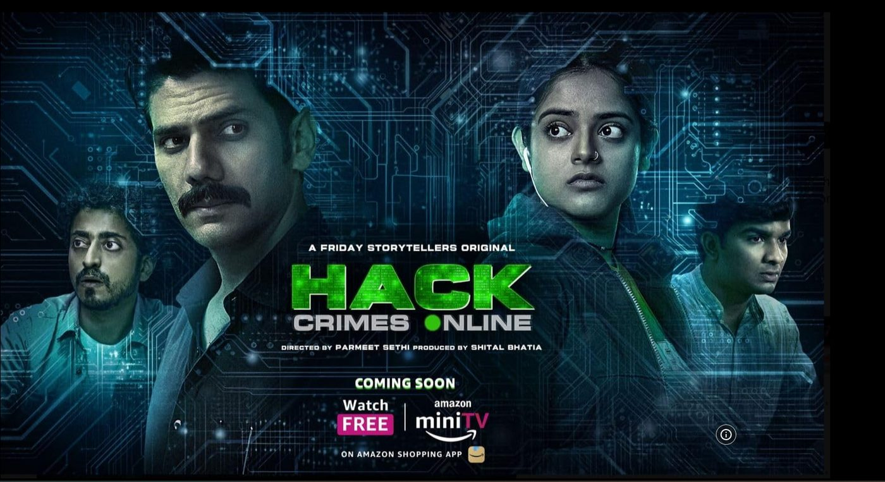
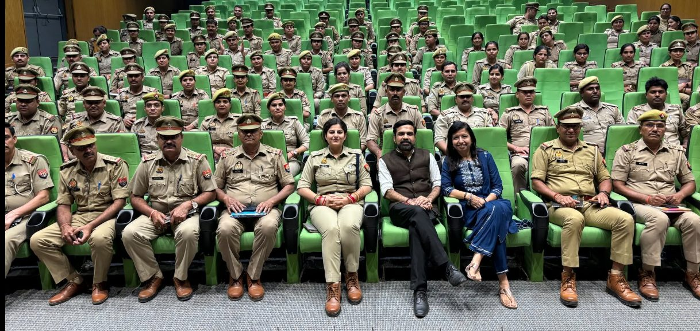
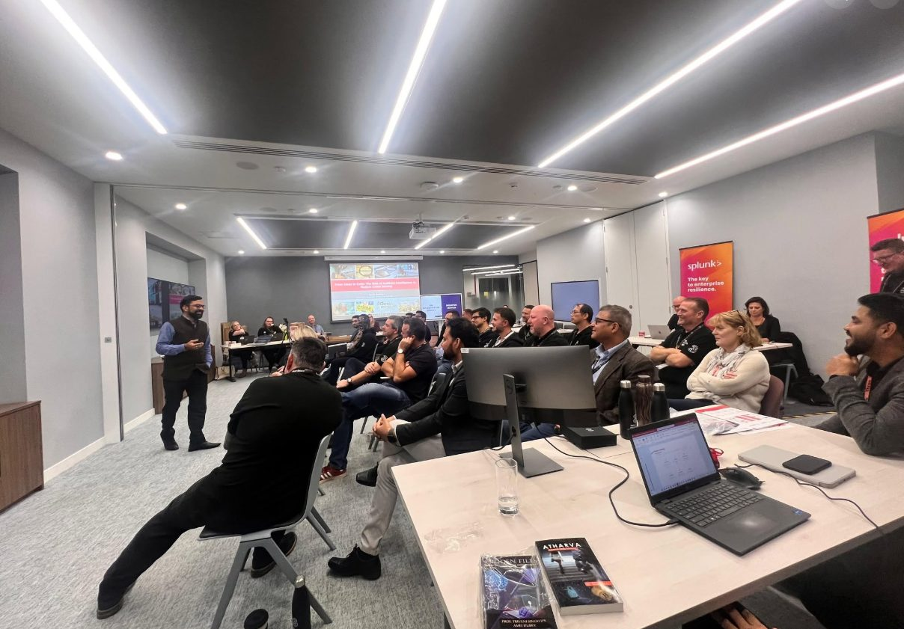
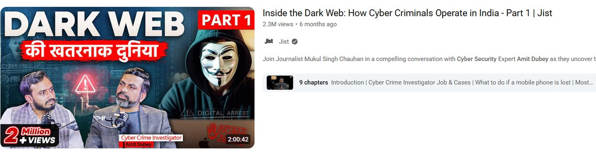

Strategic Value for the UK Cyber Industry
Translating cross-border cyber expertise to solve key vulnerabilities in the UK digital economy.
Curbing High-Volume Financial Scams
With fraud now accounting for over 40% of all crime in England and Wales, the UK is battling a sophisticated scam epidemic. Amit Dubey’s architectural blueprint for Mobi Armour (India’s first anti-fraud app with over 700K downloads globally) provides a proven playbook for real-time mobile scam detection.
- Real-time detection: Intercepting spoofing attempts and fake payment portals before damage occurs.
- Public deployment: Scalable application engines designed to operate with minimal friction for elderly and vulnerable demographics.
- Automation Integration: Direct synergy with Automation Partners' AI workflows to automate threat-intelligence feeds for banking clients.

Law Enforcement & Corporate Resilience
Having personally trained over 900,000 government officers (including police investigators, intelligence agents, and judicial officials across Asia and beyond), Amit brings battle-tested cyber forensics curricula to the UK.
- Bespoke Forensic Programs: Customized training for UK regional police forces and financial crime squads on tracing illicit dark-web fund routing.
- Corporate Simulation: Replicating real-world breaches (from 300+ cyber attack investigations) to prepare C-suite leaders and IT teams for live incident response.
- Security Automation: Up-skilling engineering workforces on automatic incident response pipelines.

A Catalyst for UK-India Cyber Cooperation
As a Commonwealth UK Chevening Cyber Security Fellow and recipient of an Honorary Doctorate conferred at the House of Lords, London, Amit acts as a trusted bridge between the UK and India's tech corridor.
- Strategic Policy Alignment: Contributing advisory experience from India's Ministry of Electronics & IT (MEITY) to help draft resilient cyber frameworks.
- Intel & Talent Pipeline: Aligning Indian cyber capabilities with UK technology requirements to establish automated cybersecurity operations.
- Bilateral Compliance: Helping multinational firms navigate cross-border data protection acts (UK GDPR / India DPDP).

Transforming Public Cyber Hygiene
Technological defenses fail if the human element remains vulnerable. As the creator and host of RedFM’s "Hidden Files" (reaching 20 Million weekly listeners), Amit has pioneered the art of teaching security through storytelling.
- Behavioral Security Training: Replacing boring training modules with engaging, narrative-driven case studies for UK corporate staff.
- Broad-Spectrum Social Campaigns: Establishing localized UK safety campaigns addressing voice cloning (Vishing), deepfakes, and phishing.
- Measurable Risk Reduction: Demonstrating how continuous security-awareness reduces human error breach vectors by up to 70%.
